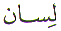
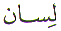
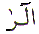
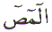
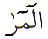

The Arabic letter
Laam ( ) is equivalent to the letter 'L'
in the English alphabet. The position of the letter Laam (
) is equivalent to the letter 'L'
in the English alphabet. The position of the letter Laam ( ) in the normal Arabic character set is 23.
In the numerical character set, Abjad, Laam (
) in the normal Arabic character set is 23.
In the numerical character set, Abjad, Laam ( )
is the 12th Letter with a numerical value of 30. This article
is about the spiritual meaning of the letter Laam (
)
is the 12th Letter with a numerical value of 30. This article
is about the spiritual meaning of the letter Laam ( ).
).
The letter Laam ( ) is one of the Muqattaat
letters. That is, it is used as a letter in an opening verse of
a chapter in the Quran. The letter Laam (
) is one of the Muqattaat
letters. That is, it is used as a letter in an opening verse of
a chapter in the Quran. The letter Laam ( )
is used 13 times as a Muqattaat letter. That is the same number
of times as the Letter Alif (
)
is used 13 times as a Muqattaat letter. That is the same number
of times as the Letter Alif ( ) is
used as a Muqattaat Letter.
) is
used as a Muqattaat Letter.
The Quran is a form of communication. The Quran is Allah's communication to the creation. The same Quran is our means of communicating with Allah. All communication is either by spoken word or written word. Even the sign language for deaf people is written word. We either communicate by tongue or by hand. There is a third form of communication which is by thought. In this day and age, there is great emphasis on communication.
However, the first form
of communication most of us learn in childhood is the communication
by tongue. Jibreel ( ) used to recite
the Quran to Muhammad
) used to recite
the Quran to Muhammad . Then Muhammad
. Then Muhammad used to recite the Quran to his community,
and the scribes used to write down the new revelation. The 'new'
Muslim community in the time of Muhammad
used to recite the Quran to his community,
and the scribes used to write down the new revelation. The 'new'
Muslim community in the time of Muhammad used to hear the recitation of the Quran from the blessed Lisaan Tongue of Muhammad
used to hear the recitation of the Quran from the blessed Lisaan Tongue of Muhammad .
.
The word Lisaan Tongue is the compliment of the ear. The tongue affects the ear. The ear affects the soul. The soul affects the entire body. Every word makes an impression on the listener. But the deepest impression made on the listener is either a kind word or a harsh word. When a gifted Qari recites the Quran, tears start flowing from the eyes of the listeners.
Yet the same tongue which can be used for reciting the Quran, or for saying a kind word or for saying a harsh word. Which ever way we look at it, the tongue is a very sharp instrument which should be used carefully.
Then, there are those who always take every word spoken by the tongue of another the wrong way because their ears are veiled. The opposite is also true, where there are those who no matter what they say, the words always come out wrong (harsh) because their tongues are veiled. This is a very subtle point.
It is the tongue which is the instrument for propagating the Message of the Quran.
It is the tongue that is used for cursing.
And the tongue is also the instrument which protects us from evil as Allah tells us in the four chapters which start with the word QUL - 'SAY'. These four chapter are:
1 Al Kafiroon Chapter 109
2 Al Ikhlas Chapter 112
3 Al Falaq Chapter 113
4 An Nas Chapter 114
On reciting these four chapters, or other parts of the Quran like Ayat ul Kursi (Chapter 2 verse 255) Allah commands the angels to protect the one who has recited these verses. The best use of the tongue is to keep it occupied with Zikr - Praising Allah and Darood. Whoever is engaged in Zikr Allah everyday, Allah creates an angel who asks for forgiveness from Allah for the one doing Zikr Allah.
The Letter Laam ( ) has been used 13 times as Muqattaat
Letter. Every time, that the Letter Laam (
) has been used 13 times as Muqattaat
Letter. Every time, that the Letter Laam ( )
appears as a Muqattaat Letter, it is preceded by the Letter Alif
(
)
appears as a Muqattaat Letter, it is preceded by the Letter Alif
( ). It has been used in the following
combinations:
). It has been used in the following
combinations:
|
|
ALIF LAAM MEEM |
ALIF LAAM RA  | ALIF LAAM MEEM SAAD  | ALIF LAAM MEEM RA |
|
|
CHAPTER 2 AL BAQARA | CHAPTER 10 YUNUS | CHAPTER 7 AL AARAF | CHAPTER 13 AR RAAD |
|
|
CHAPTER 3 AL IMRAN | CHAPTER 11 HUD | ||
|
|
CHAPTER 29 AL ANKABUT | CHAPTER 12 YUSUF | ||
|
|
CHAPTER 30 AR ROOM | CHAPTER 14 IBRAHEEM | ||
|
|
CHAPTER 31 LUQMAN | CHAPTER 15 AL HIJR | ||
|
|
CHAPTER 32 AS SAJDAT |
Since the Letter Alif
( ) always precedes the Letter Laam
(
) always precedes the Letter Laam
( ), the clue is Alif (
), the clue is Alif ( ) and Laam (
) and Laam ( ).
The numerical value of the two letters is:
).
The numerical value of the two letters is:
Alif ( )
+ Laam (
)
+ Laam ( ) = 31.
These two letters occur 13 times.
) = 31.
These two letters occur 13 times.
The number 13
is the 'mirror' image of the numerical values of the Letters Alif
( ) and Laam (
) and Laam ( )
which is 31. And to make it easy for us, we
find that the Letters Alif (
)
which is 31. And to make it easy for us, we
find that the Letters Alif ( ) and
Laam (
) and
Laam ( ) are used
as Muqattaat Letters in Chapter 13 and 31.
) are used
as Muqattaat Letters in Chapter 13 and 31.
Chapter 13 is Ar Raad and Chapter 31 is Luqman. The interesting thing about these two Chapters is that:
Chapter 13 has 43 Verses
Chapter 31 has 34 Verses
If we turn to the Quran we find:
This Verse is connected with Chapter 2 Verse 73
Which piece of the cow was the body struck with ? Or to put it another way, how is a person made to speak ? With the Lisaan tongue.
Now if we look at the other chapter, Chapter 31
How do we worship Allah ? With the tongue. The other interesting point about this Verse 13 is that it is the first verse in Chapter 31 where a person's spoken words are recorded. In this case Luqman's speech, his actual words are recorded. The tongue and the speech are gifts bestowed by Allah, we should use it for for Praising Allah and speaking kind words to others.
The tongue has been placed in the human being for Praising Allah. We must use it for that purpose. The tongue is an instrument that can invoke Allah's Blessings, we must use it for that purpose. This world is the place to use the tongue for asking Allah's Mercy. On the the Day of Judgement, the mouth will be sealed and the limbs will speak of our actions.
May Allah have Mercy on us all. Ameen.
| BACK |